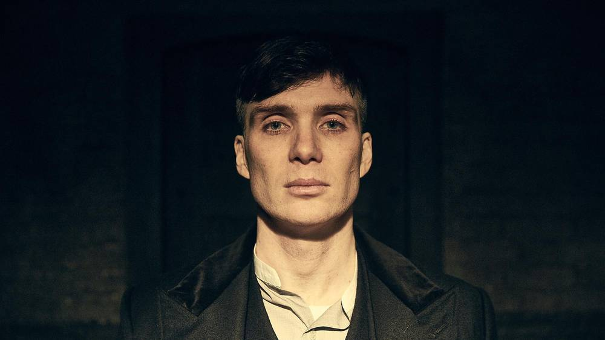

Cillian Murphy has revealed that he ditched vegetarianism after 15 years so he didn't look like a "skinny Irish fella" when he took on the role of Tommy Shelby in Peaky Blinders.
The actor spoke to Mr Porter where he explained that a personal trainer suggested he took up eating meat to help "bulk up" for the first series in 2013.
"I was vegetarian for about 15 years. But it was never a moral decision," he said. "It was more that I was worried about getting mad cow disease.
Gillen's casting follows swiftly on from the announcement that Adrien Brody will also star in the new series.
Show creator Steven Knight commented: "We have a dream team gathered for series four of Peaky Blinders, coming to us for love of the series which is great.
"Adrien Brody, Aidan Gillen and Cillian Murphy give us a wealth of talent to work with. And with Tom Hardy and Charlotte Riley returning, we couldn't have hoped for more."
The fourth series of Peaky Blinders is filming now and is expected to air in early 2018.